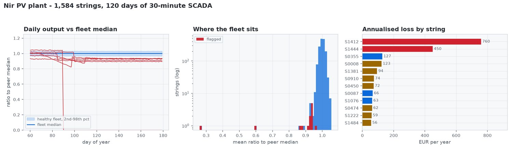

Which of 1,584 Strings Is Losing Money?
A string running 7% low is worth real money and invisible on a plant dashboard. Comparing every string with the fleet median cancels the weather; four robust detectors catch disconnects, shading, degradation and soiling; and the output is a work-order list ranked by what each fault costs a year.
1,584 strings and one maintenance crew
A 10 MW plant has 1,584 strings and one maintenance crew. Output drifts down over a season and nobody can say which strings are responsible. A disconnected string is obvious; a string running 7% low is worth real money and invisible on a plant-level dashboard. Absolute thresholds do not survive a real site either: performance ratio moves with season, temperature and soiling, so a threshold tight enough to catch a 7% loss in June raises hundreds of alarms in December.
Compare each string with its neighbours, not with a threshold
All strings on one site see nearly the same weather, so each string is measured against the fleet median for that day. Season and temperature affect the numerator and the denominator together and cancel out: a healthy string sits at 1.0 all year, and a faulted one separates from the pack.

Four detectors, one for each fault signature
| Detector | Signature | Catches |
|---|---|---|
| Zero output | Consecutive days near zero while peers produce | Disconnects, blown fuses |
| Peer ratio | Persistent gap to the fleet median, robust (MAD) z-score | Shading, degradation, chronic underperformance |
| Trend | Negative Theil–Sen slope over the whole record | Steady degradation |
| Windowed trend | Worst 30-day rolling slope | Soiling that rain partly resets |
The windowed detector exists because of a specific failure: soiling builds for weeks and is then largely washed off, so the slope across the whole record is nearly flat even though the string lost real energy. Scanning shorter windows and keeping the worst lifted soiling recall from 1 of 4 to 4 of 4. Theil–Sen is used instead of least squares because a single overcast day would drag an ordinary slope around; the median of pairwise slopes ignores it.

A work-order list, ranked by what each fault costs
| String | Inverter | Detectors | Lost kWh/yr | Lost €/yr |
|---|---|---|---|---|
| string_1412 | 9 | peer ratio + windowed trend + zero output | 9,497 | 760 |
| string_1444 | 9 | peer ratio + windowed trend + zero output | 5,620 | 450 |
| string_0355 | 3 | peer ratio | 1,592 | 127 |
| string_0008 | 1 | peer ratio + trend + windowed trend | 1,534 | 123 |
The crew attends to the €760-a-year string before the cheap ones — the list is the decision.
Scored against known faults, and honest about the miss
Every fault type was found — disconnects 2/2, shading 2/2, degradation 3/3, soiling 4/4 — except one chronic underperformance of 5%, which sits below the fleet’s own manufacturing spread and cannot be separated from noise in 120 days of data. That is a limit of the method, not a tuning problem, and it is stated as one.
Python with NumPy, pandas and matplotlib; a command-line tool that simulates, detects and scores, and runs unchanged on a real SCADA export. Open source under MIT.